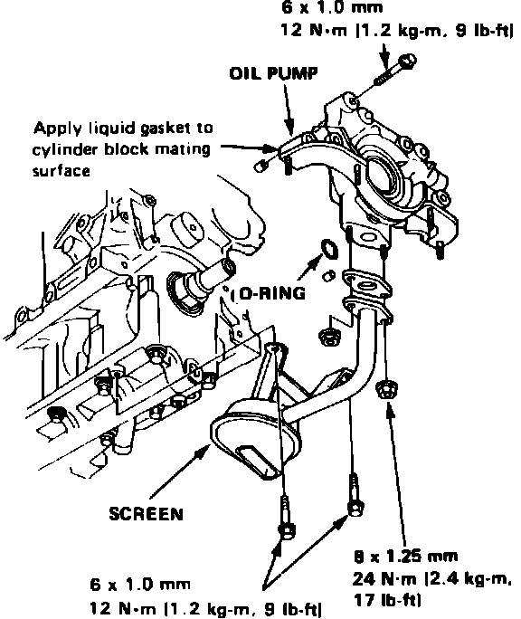
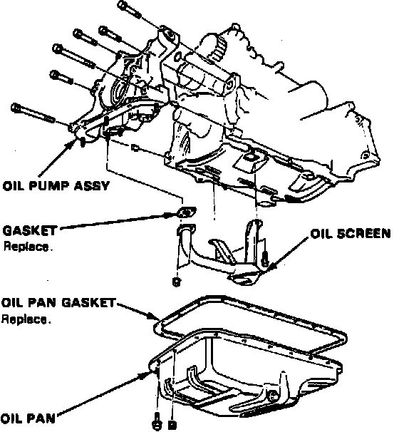
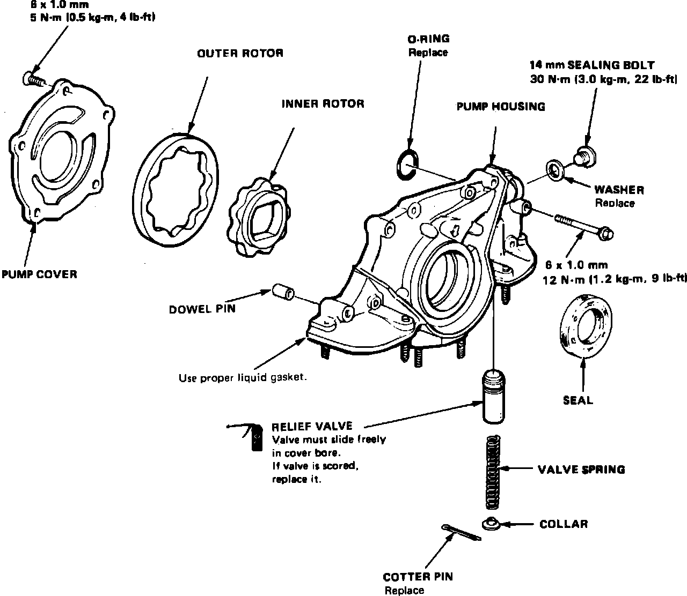
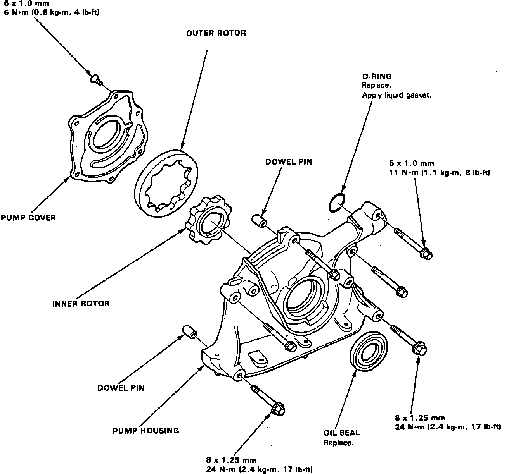
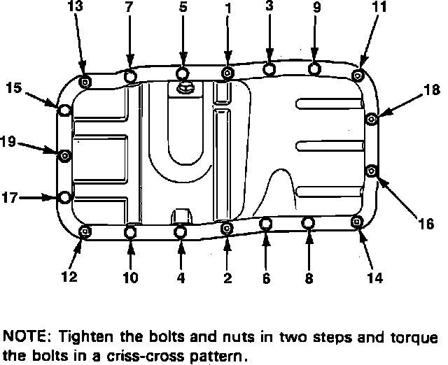

Oil Pump: Service and Repair
RemovalFig. 81 Oil Pump Replacement:

Fig. 82 Oil Pump Replacement:

1. Drain engine oil into a suitable container.
2. Rotate crankshaft until ``T'' mark or white groove on pulley aligns with index mark on cover.
3. Remove valve cover, timing belt upper cover, alternator drive belt, crankshaft pulley and timing belt lower cover.
4. Release timing belt tensioner, then remove timing belt and driven pulley.
5. Remove oil pan attaching bolts and the oil pan.
6. Remove oil screen, then the oil pump attaching bolts and oil pump, Figs. 81 and 82.
Disassembly & Inspection
Fig. 83 Exploded View Of Oil Pump Assembly:

Fig. 84 Exploded View Of Oil Pump Assembly:

Fig. 85 Oil Pump Outer Rotor Radial Clearance Measurement:

Fig. 86 Oil Pump Outer Rotor Axial Clearance Measurement:

Fig. 87 Oil Pump Housing To Rotor Clearance Measurement:

1. Remove pump housing attaching screws, then separate housing and cover, Figs. 83 and 84.
2. Measure outer pump rotor radial clearance, Fig. 85. Clearance must not exceed .008 inch.
3. Measure outer pump rotor axial clearance, Fig. 86. Clearance must not exceed .006 inch.
4. Measure radial clearance between housing and outer rotor, Fig. 87. Clearance must not exceed .008 inch.
5. Inspect both rotors and pump housing for wear or damage and replace as necessary.
6. Remove oil seal from pump, then drive in new seal using a suitable tool.
Assembly & Installation
1. Assemble oil pump in the reverse order of disassembly. Apply suitable locking compound to pump housing screws prior to installation.
2. Ensure oil pump rotates freely.
3. Apply clean engine oil to seal lip, then install dowel pins and new O-ring on cylinder block.
4. Ensure mating surfaces are clean and dry, then apply suitable sealant to cylinder block mating surface.
5. Apply suitable sealant to inner threads of bolt holes, then install oil pump. Torque attaching bolts to specifications, Fig. 81 and 82.
6. Install oil pump screen and torque attaching bolts to specifications.
Fig. 88 Oil Pan Bolt Tightening Sequence:

7. Tighten oil pan bolts in sequence, Fig. 88, to specifications.
8. On all models, do not fill engine with oil for at least 30 minutes after assembly.